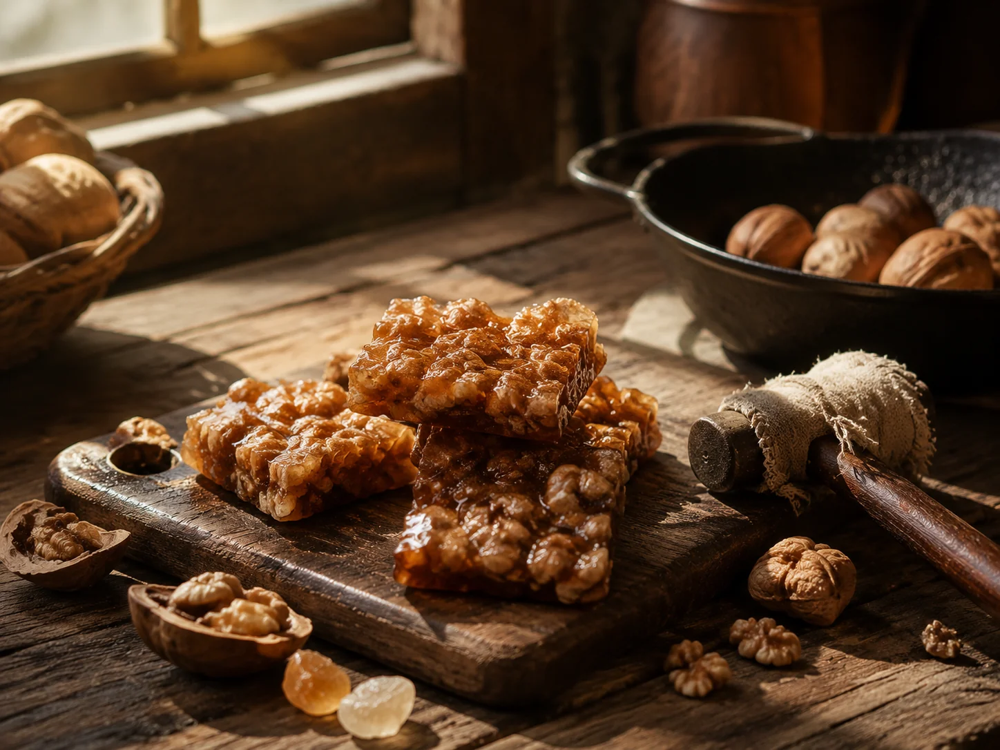

Walnut Candy at the Kitchen Door
My uncle was the one in the family who made walnut candy. He sat on a low stool at the kitchen door with a hammer and a cloth-wrapped block of rock sugar, while I crouched nearby waiting.

The hammer and the sugar
My uncle was the one in the family who made walnut candy — not my grandmother, not my mother. He brought a low stool to the kitchen doorway, wrapped a block of rock sugar in cloth, and broke it into small pieces with a hammer. The walnuts were already shelled, waiting in a bowl. He stirred them in a dry iron wok over a low flame while I crouched nearby.
Black sesame walnut paste was a slow kitchen — the sesame ground in a stone mortar, the walnuts crushed along with it, everything simmered to a dark paste. Walnut candy was the opposite: a fast wok, the sugar melted in minutes, the nuts folded in and poured out onto an oiled board to cool.
The uncle's one trick
My uncle's walnut candy was different from the kind sold in shops. He had one extra step he called "tempering": when the sugar reached the pulling-thread stage, he turned the flame off for half a minute, then back on. "It won't stick to the teeth once it cools," he said. No one in the family had tested whether the science was real, but his candy did not stick.
Stone-mortar grinding depended on strength. Wok-sugar depended on fire. My uncle did not use the technical words for what the sugar was doing at each stage, but he knew by sound and bubble: "When the bubbles are big, don't touch it. When they go small, you have to be fast."
Small hands, sticky fingers
Before the candy had fully cooled I reached for it and broke off a piece — my fingers stuck. My uncle did not scold me. He broke a small piece, blew on it until it was cool, and held it out. "Eat slowly. I'll pack a jar for you to take home." The candy went into a clean wide-mouthed glass bottle, and he screwed the lid on while the glass was still warm against my palm.
That jar of walnut candy lasted the whole winter vacation. By the end, only a layer of fine sugar dust and a few fragments of walnut skin remained at the bottom. I held the jar up to the window light and shook it once before my uncle said he would make more next year.